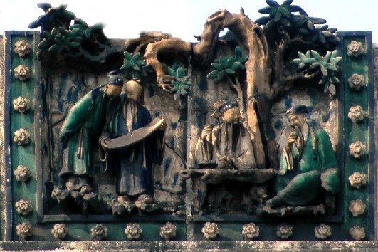

秦末汉初（公元前200年左右）的东园公、甪（lu）里先生、绮里季和夏黄公四位著名学者
，因不满秦王暴政，一齐弃官隐居商山。刘邦称帝后，多次请他们出山为官都被拒绝。后刘邦宠幸戚夫
人，打算另立太子。吕后得知，采用张良的计策，由太子刘盈（后继位为汉惠帝）亲自坐马车送张良的
信到商山，厚礼相邀，终于感动了四皓，入汉辅助太子。刘邦见太子有此四人辅助，叹道：“羽翼已成
，难动矣。”由此打消了改立太子的意图。因四隐士出山时都80有余，眉皓发白，故被称为“商山四皓
”。四皓虽为汉室立了大功，但同时也得罪了戚妃和赵王刘如意，遂辞官，云游天下，最后在太湖之中
的洞庭西山隐居。“商山四皓”既是赞高士、隐士的典故，也借喻指辅佐太子的官员。
「位于：首进正中」